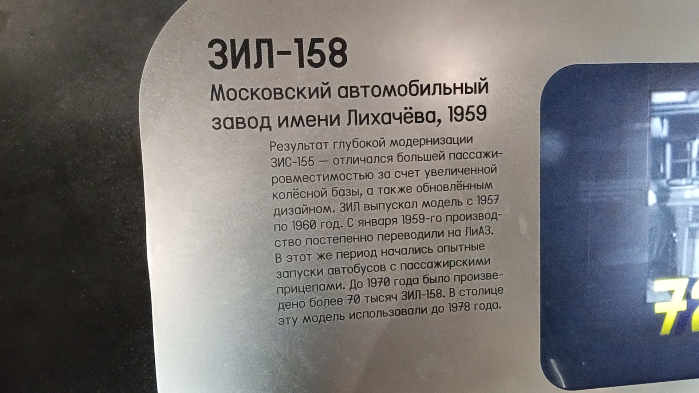
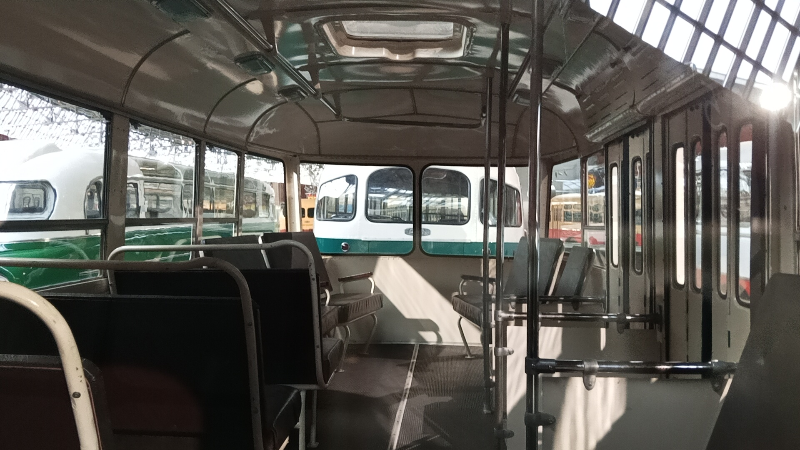

ЗИЛ-158
ЗИЛ-158 — советский городской высокопольный автобус, выпускавшийся с 1957 по 1960 год. Создан как временная модель на время доводки перспективного ЗИЛ-129, но стал последним автобусом, сошедшим с конвейера Завода имени Лихачёва.
Главное отличие от предшественника ЗИС-155 — серьёзно увеличенная колёсная база, позволившая довести вместимость до 60 человек при 32 сидячих местах. Внешний вид «фестивальной» версии ЗИЛ-158А был принят и для обычных городских моделей.
Общая информация
🏭 Производство
Заводы-изготовители: ЗИЛ (Москва), Ликинский автобусный завод (Ликино-Дулёво)
Годы выпуска: 1957–1960
Всего выпущено: 9 515 автобусов
На ЗИЛе: последний автобус собран 1 марта 1960 года
📍 Эксплуатация
Основной регион: Москва и другие города СССР
Дебют: Всемирный фестиваль молодёжи и студентов (июль–август 1957)
Наследник: ЛиАЗ-158 (производство в Ликино-Дулёве)
Снят с производства: 1960 год
⭐ Фестивальный дебют: Первые опытные образцы ЗИЛ-158 представляли собой гибрид ЗИС-155 и ЗИЛ-129Б. Специально для Всемирного фестиваля молодёжи и студентов 1957 года построили третий вариант — «фестивальный» ЗИЛ-158А с большими лобовыми стёклами, яркой окраской, дополнительными окнами на скатах крыши и радиомикрофонной установкой. Именно его внешний вид был принят для серийных городских моделей.
Технические характеристики
Основные параметры
Длина: 9,03 м
Ширина: 2,5 м
Высота: 3,0 м
Сухая масса: 5300 кг
Вместимость: 60 человек (32 сидячих)
Конструкция
Компоновка: переднемоторная, заднеприводная
Колёсная база: увеличена по сравнению с ЗИС-155
Остекление: по принципу моделей ЗИЛ-127 и ЗИЛ-129
Шаг шпангоутов: аналогичен ЗИЛ-127/129
Внешний вид: повторяет «фестивальную» версию ЗИЛ-158А
История
Рождение модели
В 1956 году московский автомобильный завод сменил в названии имя Сталина на Лихачёва. Автобусная программа предприятия находилась на распутье: шла модернизация ЗИС-155, но появилось альтернативное предложение — сделать растянутую версию этой модели, так как вместимость 155-го стала критичной. Так родился ЗИЛ-158.
«Фестивальный» вариант
Специально для Всемирного фестиваля молодёжи и студентов, намеченного на июль–август 1957 года, в августе 1956-го построили третий вариант 158-го. «Фестивальный» автобус отличала особая комплектация: обновлённый внешний вид с большими лобовыми стёклами, яркая окраска, дополнительные окна на скатах крыши, три прозрачных люка в потолке, сетки для ручной клади, ковёр на полу и радиомикрофонная установка.
Фестиваль молодёжи
К открытию фестиваля выпустили пилотную серию новых автобусов — именно им предстояло возить участников мероприятия. Именно с улучшенной модификации ЗИЛ-158А началось серийное производство модели. После фестиваля завод планомерно перешёл к выпуску ЗИЛ-158 в обычном городском исполнении, а в октябре 1957 года прекратили выпуск предшественника — ЗИС-155.
Эксплуатация и проблемы
Перешедшие по наследству проблемы ЗИС-155 и приобретённые новые (из-за спешного проектирования и слишком ранней постановки на конвейер) не сделали ЗИЛ-158 любимцем автотранспортников. Водители и ремонтный персонал были разочарованы. Самая серьёзная проблема — недостаточная прочность кузова, его пришлось усиливать уже на второй месяц производства. К прочему относились духота, шум и загазованность кабины, отсутствие усилителя руля, слабая надёжность агрегатов, вялая динамика и узкие входные двери.
Передача производства в Ликино-Дулёво
В конце 1950-х годов в советской автопромышленности наметился курс на специализацию предприятий — второстепенная продукция переводилась на другие заводы. Для ЗИЛа таковой были автобусы. С января 1959 года к сборке ЗИЛ-158 приступил бывший машиностроительный завод в подмосковном Ликино-Дулёве.
Конец автобусной программы ЗИЛа
На Заводе имени И. А. Лихачёва последний автобус собрали 1 марта 1960 года. На этом история больших автобусов производства ЗИЛ прекратилась навсегда. Производство полностью перешло в Ликино-Дулёво, где модель стала известна как ЛиАЗ-158.
Интересный факт: ЗИЛ-158 создавался как временная модель — заполнить паузу на время доводки перспективного заднемоторного ЗИЛ-129 на базе междугородного лайнера ЗИЛ-127. Однако концепция 129-й модели была отвергнута из-за массы нареканий, а наработки по ней пригодились при создании 158-го. В итоге «времянка» стала последним автобусом ЗИЛа.
Особенности конструкции
Увеличенная база
Главное отличие от ЗИС-155 — серьёзно увеличенная колёсная база. Это позволило довести вместимость до 60 человек при 32 сидячих местах, что было критично для растущих городов.
Остекление по новому принципу
При проектировании взяли за основу принцип остекления салона и шаг шпангоутов кузова, аналогичные моделям ЗИЛ-127 и ЗИЛ-129. Это дало более светлый салон и современный вид.
«Фестивальная» комплектация
Большие лобовые стёкла, оригинальная облицовка радиатора, яркая окраска, дополнительные окна на скатах крыши, три прозрачных люка в потолке, отсутствие места для кондуктора, увеличенное количество сидений, сетки для ручной клади, ковёр на полу и радиомикрофонная установка.
Проблемы конструкции
Недостаточная прочность кузова (усиливали уже на второй месяц производства), духота, шум и загазованность кабины, отсутствие усилителя руля, слабая надёжность агрегатов, вялая динамика и узкие входные двери. По сути — слегка приукрашенный и удлинённый вариант ЗИС-155 конца 1940-х.
🎉 Символ эпохи: ЗИЛ-158 — последний автобус, выпускавшийся на Заводе имени Лихачёва. Несмотря на все недостатки, он стал важным шагом в развитии советского автобусостроения и открыл дорогу ЛиАЗ-158 — главному городскому автобусу 1960-х годов.
Фотогалерея

📸 pfandrom

📸 pfandrom

📸 pfandrom
Нажмите на фото для увеличения
«ЗИЛ-158 представлял собой всего лишь слегка приукрашенный и немного удлинённый вариант автобуса ЗИС-155, разработанного ещё в конце 1940-х годов».